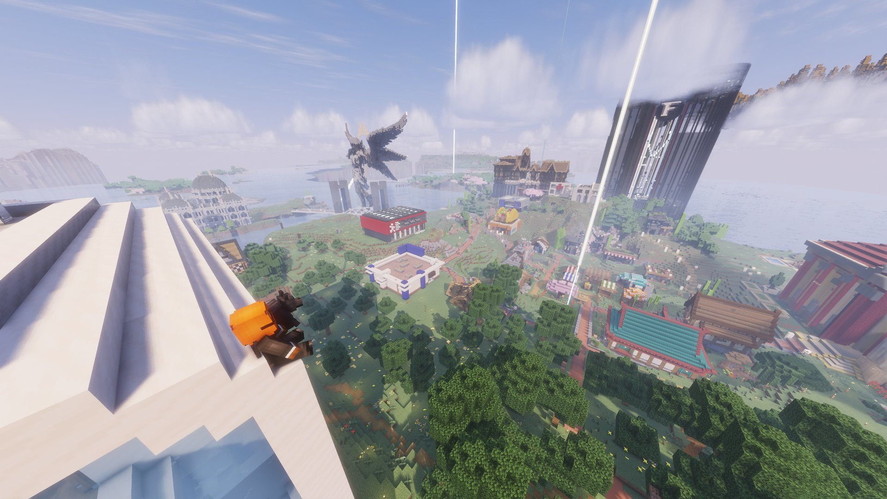

Fermeture exceptionnelle du serveur : le Karmine Déchaîné soutient la décision du staff
Le staff du serveur a annoncé une pause temporaire des activités. Face à la montée des tensions et à un rythme jugé trop intense, cette décision est prise avec responsabilité. Le Karmine Déchaîné la soutient pleinement.

Le staff du serveur a annoncé une pause temporaire des activités, et le Karmine Déchaîné souhaite relayer ce message important à tous les citoyens de Karminéa avec le sérieux qu'il mérite.
Ce qu'il faut savoir
Cette décision, prise après concertation au sein du staff, fait suite à une montée des tensions aussi bien en RP qu'en dehors, à un rythme jugé trop intense et à une accumulation d'événements qui ne laissait plus suffisamment de temps à chacun de développer ses personnages et ses histoires dans de bonnes conditions.
Notre soutien plein et entier
Le Karmine Déchaîné soutient pleinement et sans réserve cette décision. Le staff de Karminéa fait un travail considérable, souvent dans l'ombre, pour que chacun puisse vivre une expérience enrichissante et mémorable. Prendre du recul lorsque cela est nécessaire n'est pas un signe de faiblesse — c'est un signe de responsabilité et d'amour pour ce projet.
Nous adressons toute notre force et notre reconnaissance aux membres du staff. Ces quelques jours de pause sont aussi les leurs, et ils le méritent.
Notre appel aux citoyens de Karminéa
À tous nos lecteurs, nous vous demandons de respecter cette décision et de faire preuve de patience et de bienveillance. Quelques jours de pause, c'est la promesse d'un retour plus serein, plus équilibré et plus agréable pour tout le monde.
Le staff a également précisé qu'il ne souhaite pas être contacté en messages privés à ce sujet. Respectez cet espace — ils ont besoin de ce temps pour réfléchir à la suite dans les meilleures conditions.
Karminéa sera de retour. Plus forte, plus apaisée, et prête pour de nouvelles aventures.
"Les meilleures histoires ont parfois besoin d'une pause avant leur prochain chapitre."
— La Rédaction du Karmine Déchaîné